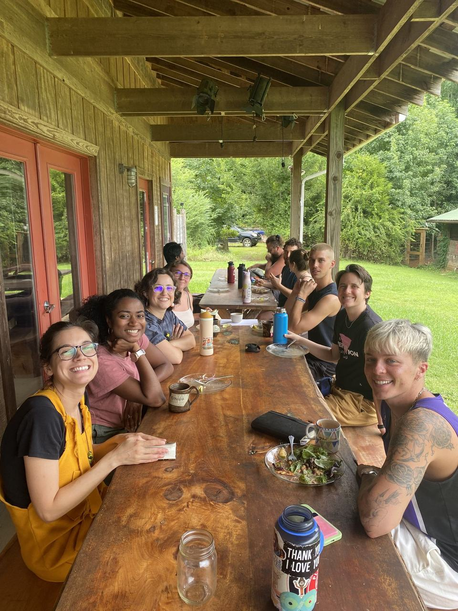

Stay Close to the Practice
Between retreats there's a newsletter, a podcast, writing on Substack, and a monthly online sit. Pick what fits.

Dharma Gates Podcast
Sharing wisdom from various Buddhist traditions, inviting listeners into a world of practice, and engaging in dialogue to illuminate the Buddhist path.
Latest Episodes
- Dana, Renunciation, and Finding One's Gift Beth Upton
- Ordaining as a Zen Monk Roshi Geoffrey Shugen Arnold
- Ordaining as a Buddhist Monk in the Theravada Tradition Nisabho Bhikkhu
These are the top three on DG’s current Podcast page, which shows no dates. Confirm they’re the newest.
Practice and Writing Between Retreats
Dharma Office Hours
A monthly online space to practice with sangha and bring your questions — meditate together, then group Q&A.
Learn MoreDharma Gates on Substack
Essays and updates from the team. Five earlier long-form pieces (2020–2023) live in the site's legacy blog — see Everything Else.
Read on SubstackDoes Dharma Office Hours continue? Its teachers are no longer on the Team page, and DG’s Office Hours page still links a dead Retreat Guru page.
Let's Connect
We'd love to hear from you — fill out the form and we'll get back to you as soon as we can.
- Programs & retreatsofferings@dharma-gates.org
- Everything elseteam@dharma-gates.org
- Mail242 Main Street #363, Beacon, NY 12508
- SocialInstagram · Facebook · YouTube
This replaces the Squarespace contact form. DG to confirm where today’s submissions go (an email notification, or stored in Squarespace).